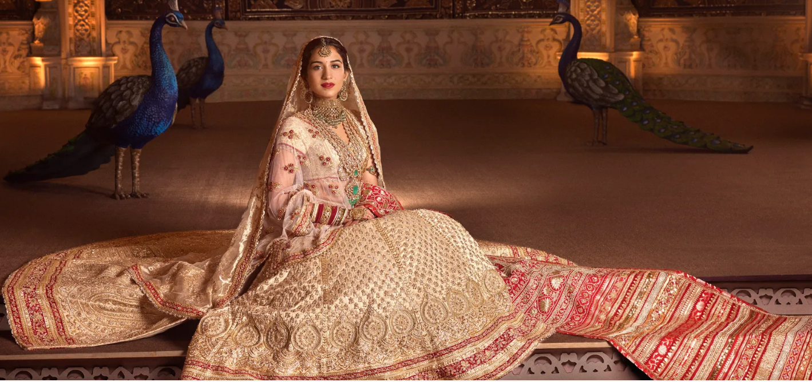

"Ambani-Family's Wedding"
Inside Anant Ambani and Radhika Merchant’s Final Wedding Celebration in Mumbai

This weekend, Anant Ambani and Radhika Merchant’s wedding took place in Mumbai—and it’s no exaggeration to say the whole world was watching.
Thousands gathered in the streets of Mumbai to watch the son of India’s wealthiest man travel from the family home of Antilla to the Jio World Convention Center for his baraat. Millions more scrolled through on social media as Kim and Khloe Kardashian posted themselves in traditional Indian clothing with a camera crew in tow.
The fervor was understandable. Mukesh Ambani, the chairman of Reliance Industries, and Nita Ambani, his wife, hosted a hastakshar for their son and his fiancée in March where Rihanna performed. In the late spring, they held grand parties for their son and his fiancée in both London and on a cruise ship that sailed the Mediterranean. One had to wonder: If the pre-wedding events were this over-the-top, what would the actual wedding be like?
Pinned on his chest was a cheetah brooch, a nod to his 3,000-acre animal rescue sanctuary Vantara in Gujarat. Isha, meanwhile, wore a custom Schiaparelli saree: a first for the French haute couture house.
As the party grew late—and Justin Bieber took the stage for a private concert—Radhika changed into a metal mesh saree by Manish Malhotra. “It featured a corset that added a modern twist,” Radhika explains. “Although it was quite heavy, it was worth every moment.”